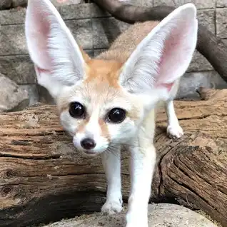
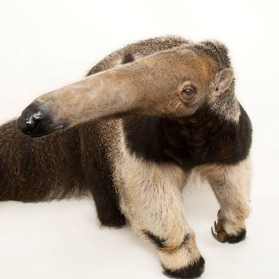

There are many mammals in the world but only some can be seen in a zoo.
Fennec Fox

Have the largest ears relative to body size of any canid. The ears reach lengths of up to six inches and act as radiators, allowing the fox to regulate its body temperature in the hot dessert.
Feet have hairy soles to protect them from hot sand
They communicate with a high pitched yelplow quiet growl
Anteaters

A giant anteater's tongue is 2 feet long and can flick in and out of its mouth 150 times per minute
But their long tongues are more than sufficient to lap up the 35,000 ants and termites they swallow whole each day.
Baby anteaters are called pups.
Sloth Bear
Sloth bears are noisy, busy animals.
If threatened, they will stand on two legs, brandishing their clawed forepaws as weapons.
Their large canines are used for defense against tigers.